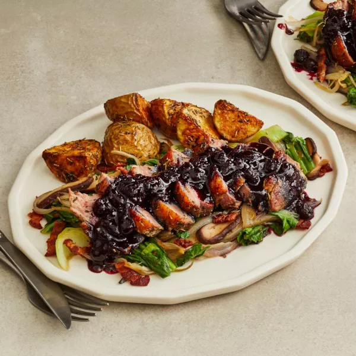

Pan-Seared Duck Breast with Blueberry Sauce

This is a delicious recipe for when you do not hvae a lot of time
the dish main ingredient is duck, and also includes frozen berries, potatoes, mushrooms, bacon and herbs.
We will explain how to create this delicious dish, but first we will show the ingredients needed.
Ingredients
- 2 teaspoons salt
- 1 teaspoon fresh-ground black pepper
- 1 ½ tablespoons dried thyme leaves
- 1 tablespoon crushed dried rosemary
- 3 tablespoons olive oil
- 4 potatoes, cubed
- 2 pints fresh or frozen blueberries
- ½ cup water
- ½ cup apple juice
- ½ cup white sugar
- 1 jalapeno pepper, finely chopped
- 3 slices pancetta or bacon, cut into thin strips
- 6 shallots, thinly sliced
- ½ cup sliced shiitake mushrooms
- 2 pounds bok choy, sliced
- 4 (8 ounce) boneless duck breast halves
- 2 tablespoons vegetable oil
- 1 tablespoon butter
- 2 tablespoons aged balsamic vinegar
Directions
- Preheat oven to 375 degrees F (190 degrees C). In a small bowl mix together the salt,
ground black pepper, thyme, and rosemary; set aside.
This will be your spice blend for seasoning the roasted potatoes and the duck breasts.
- Place cubed potatoes into a 9x13 inch baking dish. Drizzle with olive oil and sprinkle 2 tablespoons
of your spice blend over the top of the potatoes. Toss the potatoes in the pan until they are evenly
coated with oil and seasonings. Spread into a single layer across the bottom of the baking dish and bake
for 35 to 40 minutes in the preheated oven.
- While the potatoes are roasting, stir together the blueberries, water, apple juice, sugar,
and jalapeno in a small saucepan. Bring to a boil over medium-high heat, then reduce heat to low,
and simmer until the mixture has reduced to the consistency of syrup, about 10 minutes.
- Cook the pancetta in a large skillet over medium heat until crispy. Remove the pancetta to drain on a paper towel,
leaving the drippings in the skillet. Add the shallots and the mushrooms to the hot skillet; stir and cook them until
soft and just beginning to brown. Remove the shallots and mushrooms and set aside.
Increase heat to medium-high and place the bok choy in the hot skillet. Stir and cook the bok choy until the
leaves are wilted and the white stalk pieces are tender, about 5 minutes. Return the shallots, mushrooms,
and pancetta to the skillet, turn off the heat and set aside.
- Rinse the duck breast halves and pat dry. Rub the remaining spice blend onto both sides of the duck breasts.
Preheat a large skillet over medium-high heat, when the pan is hot put in the vegetable oil and butter.
Immediately place the duck breasts in the pan, skin and fat side down. Do not move the duck breasts until the skin is deep brown,
about 5 minutes. Turn the breasts and cook until the internal temperature of the thickest part is 160 degrees F (71 degrees C) for well done.
Remove the duck from the pan and place on a plate, covered with foil to rest for 5 minutes.
While the duck is resting, place the skillet with the bok choy mixture onto a burner over medium heat to warm through.
- Slice each duck breast diagonally into 1/2 inch strips. Divide the bok choy mixture among
four plates and drizzle each serving with 1/2 tablespoon of aged balsamic vinegar.
Arrange the sliced duck breasts on top of the bok choy mixture; ladle on blueberry sauce.
Serve with oven-roasted potatoes on the side.